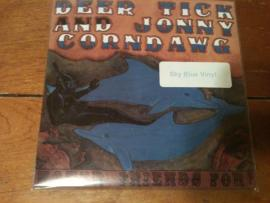

At Home He's a Tourist
picture:

So I'm on the train going to Brooklyn Bowl. Dashan had texted me that he and Suz were going to see Johnny Corndog and that I should meet them there. I'm reading the new Uncut with Dylan on the cover. There were collectors choices for different covers, early sixties, mid sixties, seventies, and present. I picked the seventies cover. There is a great lost interview inside; classic, incoate, disoriented and incomprehensible. So I get off the train and text Dashan that I'm at Brooklyn Bowl. Dashan texts me that he and Suz were hungry so they are going to Blue Ribbon. So I had never been to Brooklyn Bowl and I did not know there was a Blue Ribbon there, so I was so pissed I turned off my phone because I thought Dashan and Suz had blown me off and went to Blue Ribbon for dinner. So I go into Brooklyn Bowl and I run into Dashan, Suz, and Kelly. Michael Hurley is the opener that night, so he starts and we decide to get something to eat after we watch his set. Michael Hurley is awesome. Unaccompanied on acoustic guitar, northeast hippie style, his songs are funny, friendly, and smart. I read an entry about him in the Spin alternative Record Guide, so even though I had never heard him before I recognized a lot of the lyrics from the entry. He was a great performer, Brooklyn Bowl is a strange venue, on one side of a huge space is a stage and on the other side is a bowling ally, so there is no partition between the two sides, so the music listeners hear the pins and the bowlers hear the music. It's not as loud as you might think though even though Michael Hurley was playing solo acoutic the pins weren't too distracting, it was like we were in Vermont for the county fair and on one side of the fair we were listening to Michael Hurley while on the other side of the fair there was a fireworks display, so it sounded complementary. The set was laid back, for the last few numbers Michael Hurley picked up the pace and the audience started a mellow Grateful Dead dance. That is always awesome. So then we go to Blue Ribbon. I got ceviche shrimp which was delicious. I'm into ceviche because you can cook food with lime juice so you don't need to use any natural gas to cook it. I'm really against natural gas because when people extract it, it destroys the water supply. I don't understand what people are thinking, I mean if the water is no good not much else is really going to matter, so why not be conservative with the water and not take any risks. Anyway Dina and I are getting tons of great produce form our upstate farm share so we've been cooking up a bunch of great meals so it would be cool to ceviche. So we go to check out the merch table and we ran into Dave, Jeff, and Peter. Jeff bought a Michael Hurley LP. Michael Hurley signed it for him. The cover of the LP looks like a painting and Michael Hurley signed in the lower right corner like where you would sign a painting. So Johnny Corndog and his band start their set, rockin' country. It's indie showbiz country style, great band, really good. After they finished Johnny Corndog came out and played a solo set that was also great. So after the set I went back to merch table and bought a Johnny Corndog/Deertick split. It was the most recent release, I try to make an effort to buy newer releases otherwise I end up buying evergreen, which are great of course, but it's good to mix it up a bit as well. Deertick cover ZZ Top's song Cheap Sunglasses. ZZ Top are a strange band, they sound great, the songs are great, sometimes they fall into some novelty shtick that seems un-neccessary but whatever, one mans shtick is another mans authentic gesture. So I got a free poster when I bought the split. So Kelly has a Volvo and we drove to a bar, we were listeing to Gram Parsons, it was perfect. When we got to the bar, the drinks and the company was good and we were watching First Blood on T.V.. First Blood is great although I thought they should all be on the same side and search for something epic. After the movie we took the subway home, drank vitamin water, ate vegan snakes and talked about sixties live records.
- Prewar Yardsale's blog
- Login or register to post comments